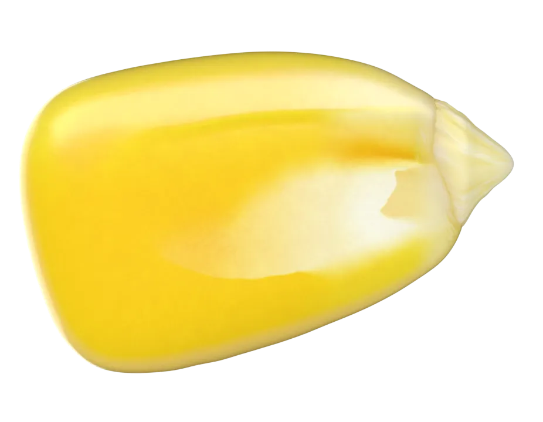
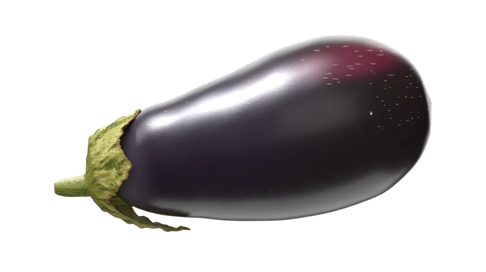
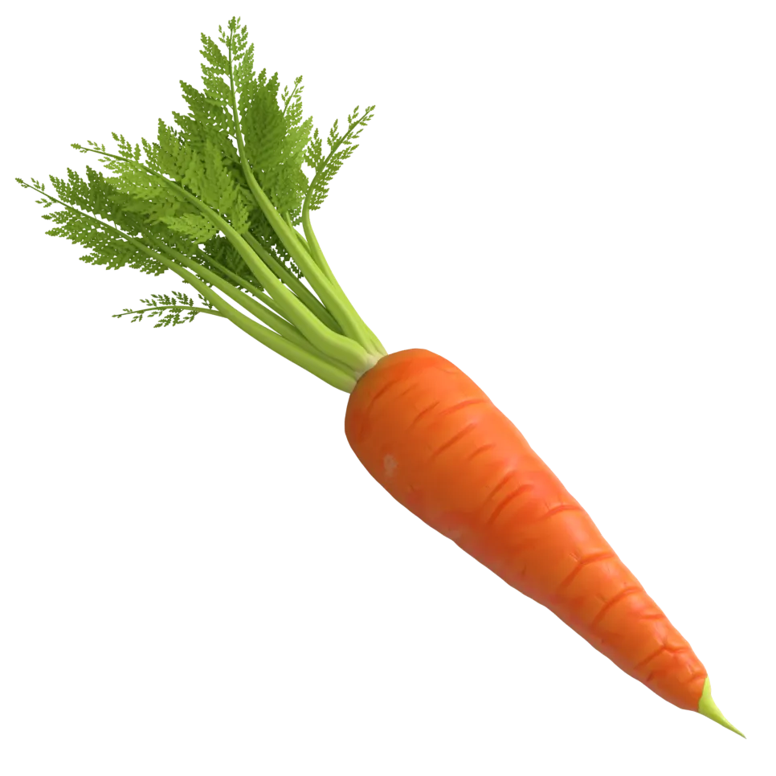

Corn nutrition
Sweet corn gets most of its energy from starch and natural sugar, with fiber and potassium alongside. Its gold color comes from lutein and zeaxanthin.
- kcal per 100 g
- 86
- fiber
- 2 g
- potassium
- 270 mg



Sweet corn gets most of its energy from starch and natural sugar, with fiber and potassium alongside. Its gold color comes from lutein and zeaxanthin.